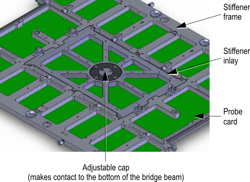
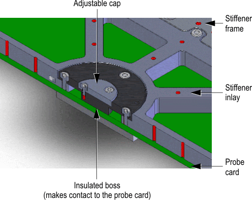

Stiffener inlay
The stiffener inlay is an additional customized inlay that is inserted inside the central area of the probe card assembly and directly mounted to the stiffener frame.
Note The drawings in this guide serve as conceptual descriptions only and may
differ from the latest original design drawings. For the original drawings see Direct-Probe probe card layout information and Direct-Probe stiffener.
Recommendation
Advantest recommends this design when excessive warpage of the PCB is of concern.
Design example

Note An adjustable cap is placed centrally atop the stiffener inlay to
make direct contact to the bottom of the bridge beam when the probe-card is loaded into the
prober head-plate. Height adjustment of the adjustable cap from the stiffener inlay example can
be similarly accomplished using shims of appropriate thickness as described for the floating
probe backer in Adjusting the planarity of the floating probe backer assembly.

Functional changes
- Introduced in SmarTest 6.5.4